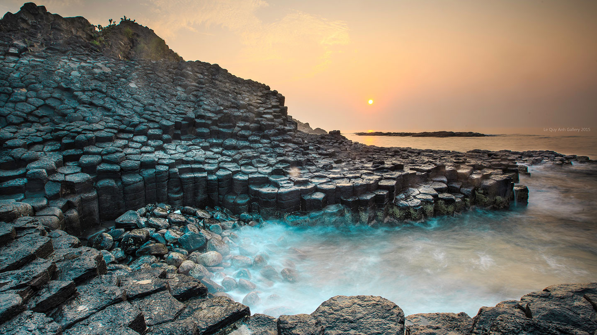

01
Ganh Da Dia
Dark basalt columns form a natural mosaic along the shoreline.

Vietnam's quiet south-central coast
Meet Phu Yen through three landscapes that make the province unforgettable.
Explore the placesGanh Da Dia, Phu Yen
Welcome
Phu Yen pairs calm beaches with volcanic rock and mountain roads. This compact guide presents three signature stops and a simple route for experiencing them in one day.
Featured places
Select any photograph to open a larger, keyboard-accessible view.
01
Dark basalt columns form a natural mosaic along the shoreline.
02
A sheltered beach where golden sand meets cactus-covered slopes.
03
A winding mountain route with wide views toward the coast.
A simple itinerary
Start with soft morning light, follow the coast north, and finish above the sea.
Walk the quiet sand before the middle of the day.
Study the geometric coastline and rest beside the water.
End the route with a broad view across the green mountains.
Project evidence
Each feature improves accessibility or makes the site easier to use.
Keyboard users can jump directly to the main content.
The header control switches between light and dark themes.
Images open in a labelled dialog that works with the keyboard.
A floating control appears after visitors scroll down the page.
About this project
The page begins as a single-column mobile layout. At wider viewports, the navigation becomes horizontal, destination cards form a three-column grid, and supporting content gains more breathing room.
Read more travel information